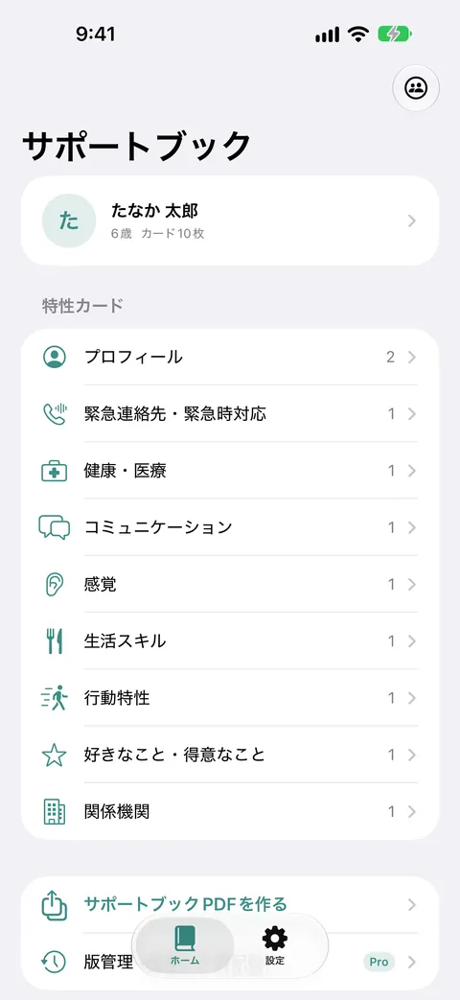
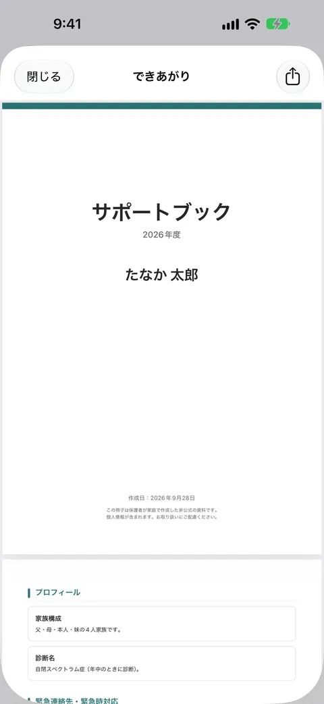
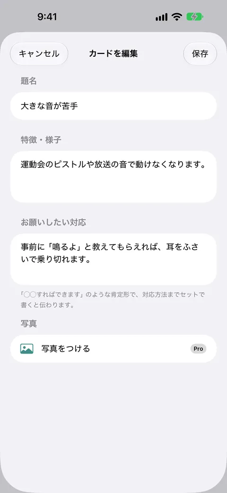
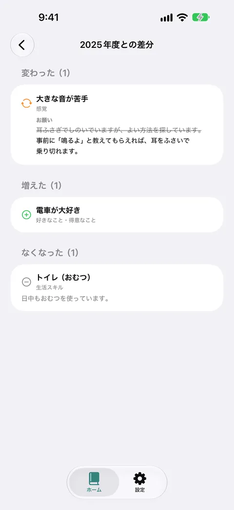

サポートブックメーカー
1冊無料で作成・PDFで渡せる
発達障害・障害のあるお子さまの特性とお願いしたい対応を、カードに記録するだけ。1冊（1人分）まるごと無料で作成でき、そのままPDFで先生に渡せます。買い切りProで、きょうだいの追加・写真添付・年度ごとの記録の比較ができます。




サポートブックメーカーは、発達障害・障害のあるお子さまの特性や、まわりにお願いしたい対応を記録し、先生や支援者に渡すための「サポートブック」をスマホだけで作れるアプリです。
こんなときに
入園・入学・進級・転級・放課後等デイの利用開始など、新しい先生や支援者にお子さまのことを伝える必要があるとき。
できること
- 9つのカテゴリ（プロフィール／緊急連絡先・緊急時対応／健康・医療／コミュニケーション／感覚／生活スキル／行動特性／好きなこと・得意なこと／関係機関）ごとに、「特徴」と「お願いしたい対応」をセットでカードに記録します
- 書けた項目だけで、表紙付きのPDFをその場で作成できます。空欄の項目は自動で省かれます
- 渡す相手に合わせて、載せる項目を選べます
- 進級前（2月）・就学相談前（10月）にお知らせが届きます
1冊は無料
お子さま1人分のサポートブックは、作成・PDF出力とも無制限で無料です。買い切りPro（¥980）では、きょうだいの追加、年度ごとの記録の版管理と昨年との差分表示、カードへの写真添付が使えるようになります。購入しなくても、作成した記録が読めなくなることはありません。
安心について
入力した内容はすべて端末の中だけに保存されます。外部のサーバーへ送信されることはなく、会員登録も不要です。Face ID・パスコードでのアプリロックにも対応しています。
本アプリは記録・文書作成のためのツールであり、診断・アセスメント・療育を行うものではありません。お子さまの発達について気になることは、専門機関にご相談ください。